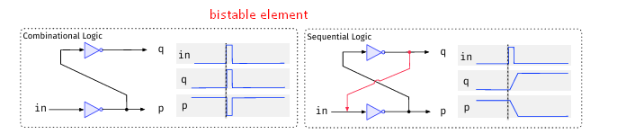
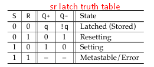
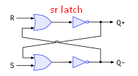
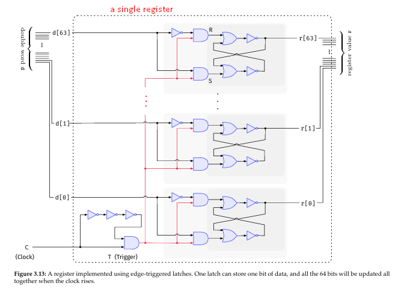
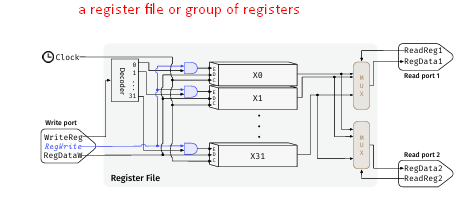
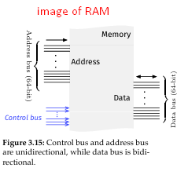
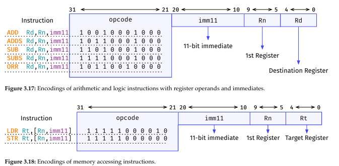
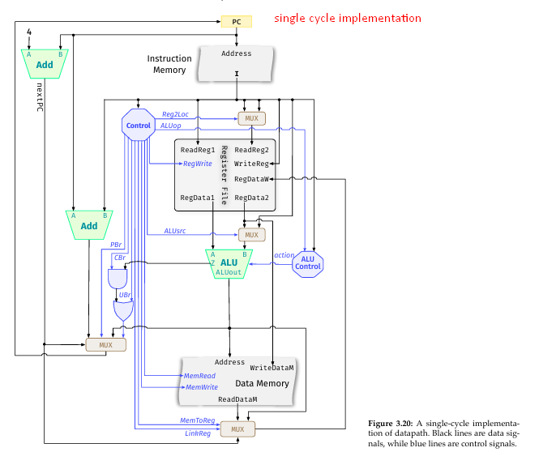

Microprocessor Design
Made up of registers and the arithmetic logic unit (ALU) is able to store data temporarily and perform arithmetic calculations
3.1 Logic Gates
4 logic gates: and, or, xor/exclusive or, not
the delay between the change in inputs and the result becoming 1 is the rising delay
the delay between the change in inputs and the output becoming 0 is the falling delay

3.1.2 Combinational Logic
Combinational logic is when logic gates are combined in one direction with no loops
Checking if two different bits are equal is easy, however to check if two larger data types (ex: double words) are equal, you must use buses in order to easily transfer data from one input into multiple logic gates that check each bit individually.
To select which input you want to use as an output, use a multiplexer (MUX).
To make a bit multiplexer, there must be 3 inputs, a, b, and s which is the control signal
The control signal is a switch that controls which input is selected between the two.
When the control signal is 1 the signal is asserted/set
When the control signal is 0 the signal is deasserted/clear
To choose between multiple inputs, you need a N-Way multiplexer, where N is the amount of inputs you are choosing between.
To figure out how may control signals you need for a multiplexer, use S = round_up(log_2 N), easy way is how many bits you need to represent your number of choices in binary.
Performing arithmetic uses combinational logic.
To add 2 bits, there must be 2 inputs x and y, and as well as a carry-in flag cin.
The output will also require a carry-out flag cout
This is effectively allowing you to add up to 3 numbers, truth table attached below. This is important when adding larger values.
The smallest carry out flag will usually be 0, and the largest carry-out flag will be sent to the CSPR's carry flag.
3.1.3 Sequential Logic
Used to store data
A bistable element does not have any cycles and has two outputs, p and q, and an input in.
When in goes from 0 to 1 then 0 shortly after, both p and q take a small delay to respond, and then shortly change back to their original state. This is combinational logic
To make sure that p and q save their results from in being turned in, you must add a loop between q and the wire of in. This changes the logic from combinational to sequential.
The reason why this works is because when you set q to 1 and p to 0 using in, q will send the value back to the wire of in, this will cause a loop where in is powering p and q, and q is powering the wire of in which is connected to p and q. See attached for more detail.
Sequential logic has a higher delay than combinational logic, this delay is called propogation delay.
A flaw with the bistable element is that it is impossible to switch the outputs back to their original state.
Set-Reset latches (SR latch are a type of circuit that allows you to change the output back to it's original state.
There are 2 inputs, S(set), R(reset), and 2 outputs Q+ and Q-.
Q+ and Q- will always have opposite values.
Setting S to 1, then 0 shortly after will cause the output Q+ to change to 1.
To change Q+ back to 0, change R to 1 then back to 0.
SR latches have 4 possible states. (See truth table attached)
Setting: make S 1, causing Q+ to become 1
Resetting: make R 1, causing Q+ to revert to 0)
Latched/Stored: The input of S or R are both 0, and the values of Q and R depend on the previous state.
Metastable: Both S and R are 1, causing an error.
The truth table for an SR latch is written using q to determine the value of Q+ and !q is used to determine the value of Q-
The SR latch is only good for sending 1 bit, and not actual data. This is because it is hard to sync multiple of them when trying to handle larger data types.
 The Data Latch (D Latch) solves the two flaws of the SR latch
SandRare unable to store actial data- When there are many SR latches, it is difficult to synchronize them.
The D latch introduces a clock C, which ticks by the slowest propogation speed in the circuit. C controls when input data D can change output Q+. When C is active, the D latch is latching and Q+ will change it's data according to D. When C is inactive, the D latch is storing. When storing, as long as C is inactive, Q+ will not change regardless of D.
An issue with D latches is that the value changes every time C is active, which makes it unable to truly store data. To combat this, flip-flops or edge-triggered latches (FF latches for notes) are used.
FF latches only change when C is on the rising edge or it is being turned on, and won't respond to anything else. To measure if the C is on it's rising edge, three not gates leaving the C are connected to an and gate, and the C is directly connected to the other input of the and gate. The and gate is called the Trigger (T). The reason why this works is because there is an extremely small amount of delay between an input and a result, so the three not gates take advantage of that delay to capture the rising edge of C. Besides that the FF latch works very similarly to the D latch.
A register is a group of flipflop circuits where each stores one bit. (Same registers as assembly)
All of the flipflops are controlled by the same clock.
In assembly, we have 32 general purpose registers all controlled by one clock that make one register file (see image for what a register file looks like)
Each register file has 2 read ports and 1 write port.
The write port has three inputs. RegDataW for the actual data input, WriteReg for where to write the data, and RegWrite which will determine if the data should be written or not.
The read ports have two register numbers ReadReg1 and ReadReg2 are selectors for two different multiplexers which, then sends data to RegData1 and RegData2 respectively.
Writing Data is sequential because it uses a clock. Reading data is combinational because of the multiplexers.
 Random Access Memory (RAM) aka memory uses sequential logic to store data. RAM has three buses, control, data, and address. Unlike the other two busses which are unidirectional (only 1 way the input can move), the data bus is bidirectional, which means it can only send or read data, not both simultaneously. The address bus will contain the memory address. The data bus will contain the data either to send or read based on the control bus. The control bus in this course will have a width of two bits and will indicate whether to read or write data using the data bus.
For more info on RAM check out chapter 1's RAM section.
3.2 Assembly --> Machine Code
encoding is the process of turning assembly into binary.
All ARMv8 encodings (not mandatory): https://developer.arm.com/documentation/ddi0602/2022-03/Base-Instructions
Each arm assembly instruction has 4 bytes (32 bits), and about 2 fields. The leading bits are opcode which is used to determine the mnemonic/instruction. The rest of the bits are used for operands such as read/write numbers, and addresses.
3.1.2 Arithmetic and Logical instructions
There is some patterns to the opcode in instructions, such as if the 30th bit is active, then subtraction will occur, and addition otherwise, and the 29th bit is used to determine whether or not to select condition codes.
When handling registers, bits 15-->10 will always be 111000 for this course.
When handing instructions with immedietes instead of registers, bits 20-->10 are now used to represent the immediate/number. Besides that handling immediatesis near identical to handling registers.
Do note that the same instructions have different opcodes, from when handling registers, see the image attached for the proper instructions for handling immediates.
When handling branching, the imm11 section that is bits 20 through 10 is the label address of the branch - address of the branching instruction
The 4th through 0th bit for CBZ has RT in it, the target register is the register you are comparing to 0.

3.3 Single Cycle Datapth
Notation
R[x] = 64-bit data inside register x
M[a] = data at an address a inside memory
D[a:b] = multibit data D, from bit a to b (inclusive)
R[0][5:2] = 2nd to 5th bit in register X0
M[R[1]][31:0] = data at an address indicated by the data in X1
if-else statements follow the format of (truecase) if (condition) else (falsecase)with true and false cases being whether the condition is true or not.
if-else statements can be nested as well, following the form (true case) if (condition) else (ifelse true case) if (ifelse condition) else (false condition)
Blue lines transfer control signals which are usually 1 bit of data, but can be more, used to tell the CPU what operations to perform
Black lines transfer data signals which sends data such as operands, they are usually groups of parallel lines/buses where each line transfers 1 bit and they do so simultaneously.
attached is a single cycle data path, it a simplified and inefficient version but shows the key concepts of designing a processor
note instruction and data memory are both the same memory and are only seperate for illustration, instruction goes to .text and data goes to either .data, .bss, or the stack area
the process of each instruction takes only 1 clock cycle
